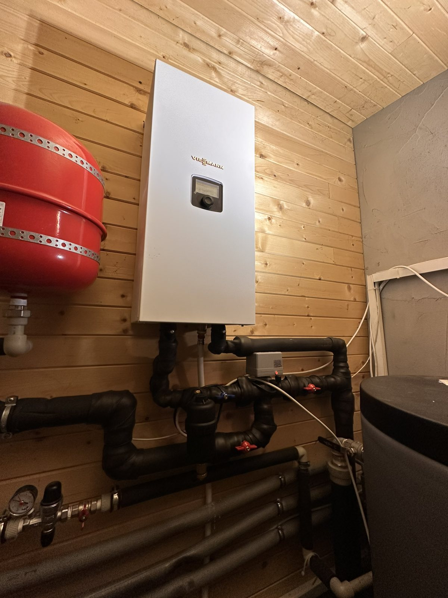
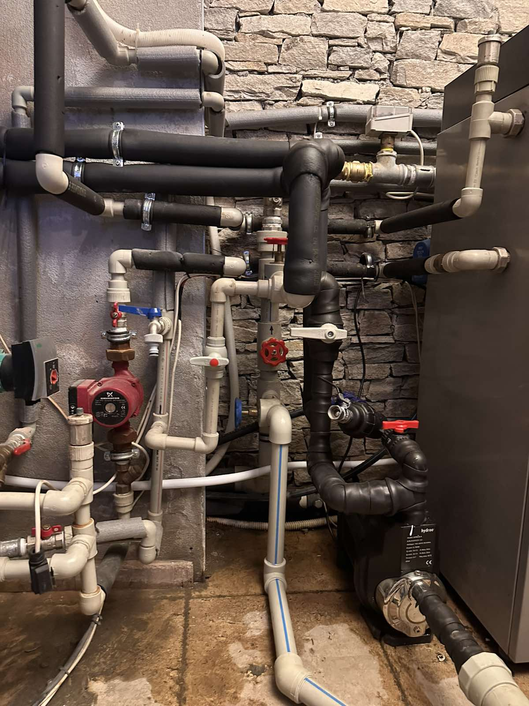
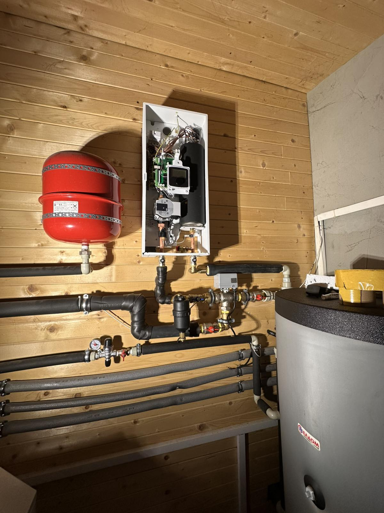
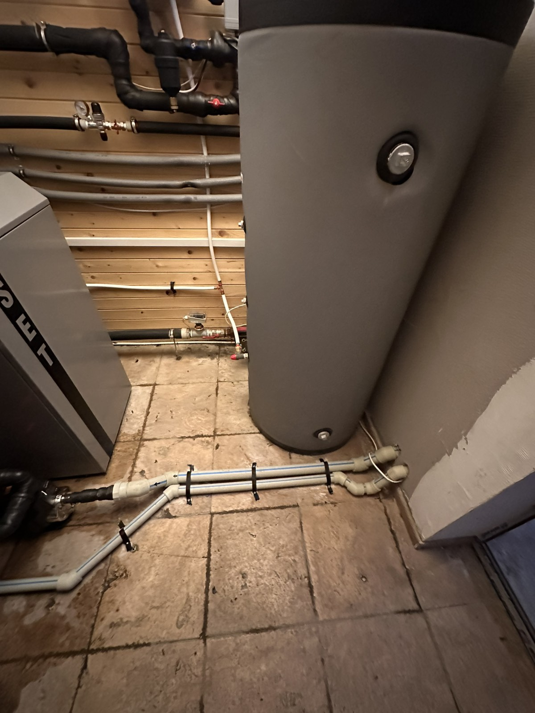

Преглед на проекта
При този обект екипът на Vigentis извърши цялостна ревизия, почистване и пълна модернизация на съществуваща 10-годишна инсталация с термопомпа „Вода-Вода“. Тъй като обектът работи като къща за гости, основният фокус на нашия проект беше да подсигурим 100% непрекъсваемост на процесите, защита на скъпото оборудване и абсолютна сигурност за комфорта на гостите.
Какво изпълнихме
- Дълбоко пречистване на инсталацията: Извършихме цялостно почистване на системата от натрупаните с годините замърсявания, с което възстановихме първоначалната ефективност и топлообмен на термопомпата.
- Иновативна филтрация на сондажната вода: Проектирахме и изградихме специализирана филтрираща система за подпочвените води. Тя служи като сигурен щит, който предпазва термопомпата от запушване, натрупване на пясък и фини частици, удължавайки драстично нейния експлоатационен живот.
- Интегриране на резервен източник (електрически котел): Монтирахме допълнителен електрически котел, който да действа като аварийна мощност.
Интелигентно управление и автоматизация
Най-важният акцент в модернизацията е внедряването на съвременна автоматика за управление. Към днешна дата инсталацията във Вила „Антик“ е напълно автономна:
- При възникване на какъвто и да е проблем или авария по основната термопомпа, системата автоматично превключва към резервния електрически котел.
- В същия момент собственикът получава незабавно известие (нотификация) на телефона си за възникналото събитие.
- Инсталацията продължава да поддържа зададените параметри на микроклимата и БГВ (битова гореща вода) без прекъсване, гарантирайки, че гостите на вилата няма да усетят никаква промяна в комфорта до пълното отстраняване на проблема от нашия сервизен екип.
Резултатът
Една по-ефективна, защитена и напълно автоматизирана ОВК система, която носи спокойствие на собствениците и безкомпромисен уют на техните гости.




